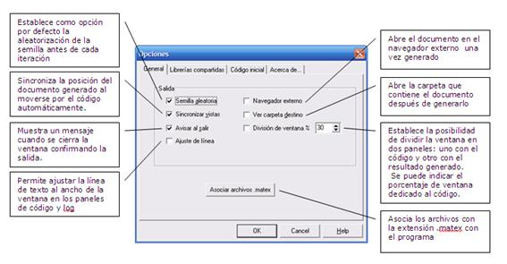
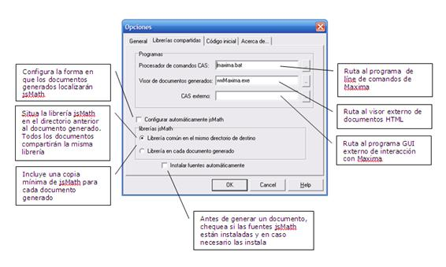
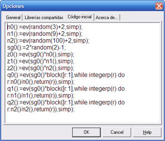
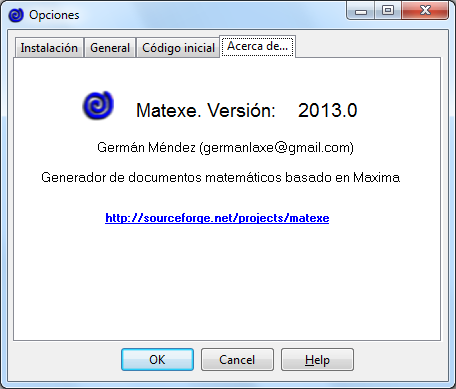

Opciones del programa
General

Librerías compartidas

Código inicial
Antes de generar un documento, el programa envía a Maxima las instrucciones definidas en la pestaña “Código inicial”. Mediante esta característica es posible definir funciones comunes a todos los documentos.

Información de la versión

Created with the Personal Edition of HelpNDoc: Create iPhone web-based documentation